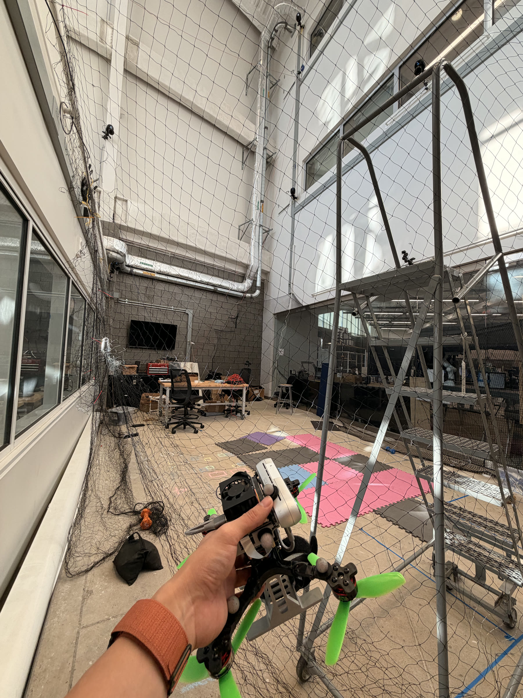

Research · Sim-to-real
Toward Safe Sim-to-Real Visual Control Using a 3DGS Aerial Simulator
Building a photorealistic simulation pipeline for visual policies and aerial robot deployment.


Project overview
Vision policies need useful training observations and a credible path to hardware. This project combines a reconstructed laboratory appearance with aerial-robot dynamics.
Developing the simulator and the training/deployment pipeline, investigating how scene reconstruction, camera observations and robot dynamics fit together.
The planned pipeline links 3DGS scene appearance, collision geometry, synchronized robot/camera poses and policy training. Training-method selection and hardware transfer remain development work.
The pipeline is being established. Completed visual-policy training, faster deployment and successful zero-shot transfer are not claimed.